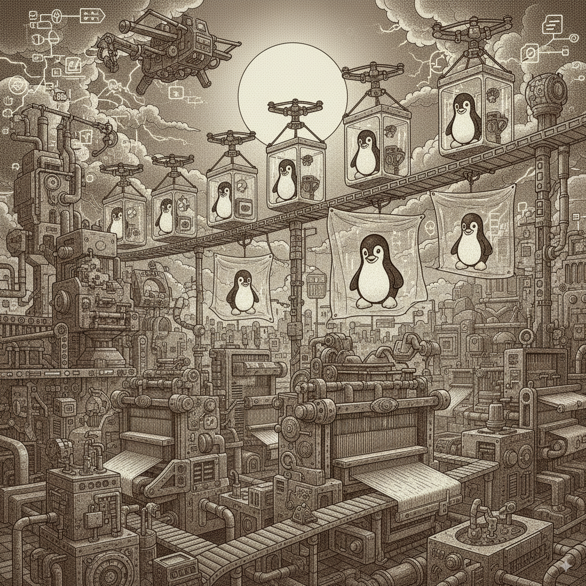
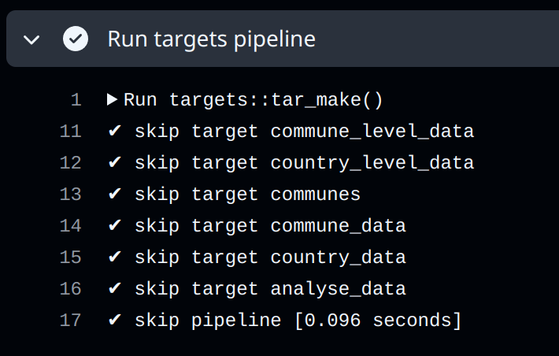
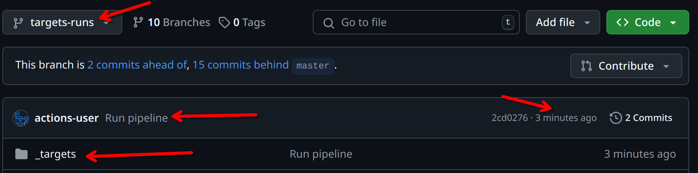

8 Intro to CI/CD with Github Actions
What you’ll have learned by the end of the chapter: very basic knowledge of Github Actions, but enough to run your RAP in the cloud.
8.1 Introduction
We are almost at the end; actually, we could have stopped at the end of the previous chapter. We have reached our goal; we are able to run pipeline in a 100% reproducible way. However, this requires some manual steps. And maybe that’s not a problem; if your image is done, and users only need to pull it and run the container, that’s not really a big problem. But you should keep in mind that manual steps don’t scale. Let’s imagine another context; let’s suppose that you are part of a company and that you are part of a team that needs to quickly ship products to clients. Maybe several people contribute to the product using an internal version control solution (like a Gitlab instance that is deployed on the premises of your company). Maybe you even need to work on several products in the same day; you (and your teammates) should only be focusing writing code (and Dockerfiles)… your time and resources cannot get clogged by building images (which depending on what you’re working on, can take quite some time). So ideally, we would want to automate this step. That is what we are going to learn in this chapter.
This chapter will introduce you to the basic ideas of CI/CD (Continuous Integration and Continuous Deployment/Delivery) and DevOps with Github Actions. Because we’re using Git to trigger all the events and automate the whole pipeline, this can also be referred to as GitOps. What’s Dev(Git)Ops? I think that the Atlassian page on DevOps makes a good job of explaining it. The bottom line is that DevOps makes it easy for developers to focus on coding, and makes it easy for them to ship data products. The core IT team provides the required infrastructure and tools to make this possible. GitOps is a variant of DevOps where the definition of the infrastructure is versioned, and can be changed by editing simple text files. Through events, such as pushing to the repository, new images can be built, or containers executed. Data products can then also be redeployed automatically. All the steps we’ve been doing manually, with one simple push! It’s also possible, in the context of package development, to execute unit tests when code gets pushed to repo, or get documentation and vignettes compiled. This also means that you could be developing on a very thin client with only a text editor and git installed. Pushing to Github would then execute everything needed to have a package ready for sharing.
So our goal here is, in short, to do exactly the same as what we have been doing on our computer (running tests, building documentation, run pipelines) but directly from GitHub’s runners.
8.2 Getting your repo ready for Github Actions
Obviously, you should use a project that is versioned on GitHub. Use the package we’ve developed previously. If you go on its GitHub page, you should see an “Actions” tab on top:

This will open a new view where you can select a lot of available, ready to use actions. “Actions” are premade scripts that execute some commands you might need: such as setting up R, Python, running tests, etc. Since we’re using Nix, we don’t really need to look for any actions to set up our environments. However, we might want to use some pre-made actions to upload artifacts for instance.
To actually configure our repository to run actions, we need to edit a file in our project under the .github/workflows directory (create them if needed). In it, write a yaml file called hello.yaml and write the following in it:
name: Hello world
on: [push]
jobs:
say-hello:
runs-on: ubuntu-latest
steps:
- run: echo "Hello from Github Actions!"
- run: echo "This command is running from an Ubuntu VM each time you push."Let’s study this workflow definition line by line:
name: Hello worldSimply gives a name to the workflow.
on: [push]When should this workflow be triggered? Here, whenever something gets pushed.
jobs:What is the actual things that should happen? This defines a list of actions.
say-hello:This defines the say-hello job.
runs-on: ubuntu-latestThis job should run on an Ubuntu VM. You can also run jobs on Windows or macOS VMs, but this uses more compute minutes than a Linux VM (which doesn’t matter for public projects. For private projects, the amount of compute minutes is limited).
steps:What are the different steps of the job?
- run: echo "Hello from Github Actions!"First, run the command echo "Hello from Github Actions!". This commands runs inside the VM. Then, run this next command:
- run: echo "This command is running from an Ubuntu VM each time you push."Let’s push, and see what happens on github.com:
If we take a look at the commit we just pushed, we see this yellow dot next to the commit name. This means that an action is running. We can then take a look at the output of the job, and see that our commands, defined with the run statements in the workflow file, succeeded and echoed what we asked them.
8.3 Nix and GitHub Actions
To set up Nix on GitHub Actions you can use several steps (create a new file called run-tests.yaml):
- name: Install Nix
uses: cachix/install-nix-action@v31
with:
nix_path: nixpkgs=https://github.com/rstats-on-nix/nixpkgs/archive/r-daily.tar.gz
- name: Setup Cachix
uses: cachix/cachix-action@v15
with:
name: rstats-on-nixIf you’re repository contains a default.nix file, the same environment you’ve been using locally can be used on GitHub Actions just as easily. You can also instead generate the default.nix from the gen-env.R script:
- name: Build dev env
run: |
nix-shell --expr "$(curl -sl https://raw.githubusercontent.com/ropensci/rix/main/inst/extdata/default.nix)" --run "Rscript -e 'source(\"gen-env.R\")'"You can then use the shell to run whatever you need. For example, if you’re developing a package, you could run unit tests on each push:
- name: devtools::test() via nix-shell
run: nix-shell --run "Rscript -e \"devtools::test(stop_on_failure = TRUE)\""stop_on_failure = TRUE is needed to make the step fail if there’s an error, otherwise, the step would run successfully, even with failing tests.
Of course, if you’re developing a Python package, use nix-shell --run "pytest" instead to run the tests.
I highle recommend you run tests when pull requests get opened:
on:
push:
branches: [ "main" ]
pull_request:
branches: [ "main" ]This will ensure that if someone contributes to your project, you know immediately if what they did breaks tests or not. If it does, ask them to fix the code until tests pass.
8.4 Running a dockerized workflow
This next example can be found in this repository. This example doesn’t use Nix, {rix} nor {rixpress}, but the point here is to show how a Docker container can be executed on GitHub Actions, and artifacts can be recovered. The process is always the same, regardless is inside the Docker image.
This is what our workflow file looks like:
name: Reproducible pipeline
on:
push:
branches: [ "main" ]
pull_request:
branches: [ "main" ]
jobs:
build:
runs-on: ubuntu-latest
steps:
- uses: actions/checkout@v5
- name: Build the Docker image
run: docker build -t my-image-name .
- name: Docker Run Action
run: docker run --rm --name my_pipeline_container -v /github/workspace/fig/:/home/graphs/:rw my-image-name
- uses: actions/upload-artifact@v4
with:
name: my-figures
path: /github/workspace/fig/For now, let’s focus on the run statements, because these should be familiar:
run: docker build -t my-image-name .and:
run: docker run --rm --name my_pipeline_container -v /github/workspace/fig/:/home/graphs/:rw my-image-nameThe only new thing here, is that the path has been changed to /github/workspace/. This is the home directory of your repository, so to speak. Now there’s the uses keyword that’s new:
uses: actions/checkout@v5This action checkouts your repository inside the VM, so the files in the repo are available inside the VM. Then, there’s this action here:
- uses: actions/upload-artifact@v4
with:
name: my-figures
path: /github/workspace/fig/This action takes what’s inside /github/workspace/fig/ (which will be the output of our pipeline) and makes the contents available as so-called “artifacts”. Artifacts are the outputs of your workflow. In our case, as stated, the output of the pipeline. So let’s run this by pushing a change, and let’s take a look at these artifacts!
As you can see from the video above, a zip file is now available and can be downloaded. This zip contains our plots! It is thus possible to rerun our workflow in the cloud. This has the advantage that we can now focus on simply changing the code, and not have to bother with boring manual steps. For example, let’s change this target in the _targets.R file:
tar_target(
commune_data,
clean_unemp(unemp_data,
place_name_of_interest = c("Luxembourg", "Dippach",
"Wiltz", "Esch/Alzette",
"Mersch", "Dudelange"),
col_of_interest = active_population)
)
I’ve added “Dudelange” to the list of communes to plot. Let me push this change to the repo now, and let’s take a look at the artifacts. The video below summarises the process:
As you can see in the video, the _targets.R script was changed, and the changes pushed to Github. This triggered the action we’ve defined before. The plots (artifacts) get refreshed, and we can download them. We see then that Dudelange was added in the communes.png plot!
It is also possible to “deploy” the plots directly to another branch, and do much, much more. I just wanted to give you a little taste of Github Actions (and more generally GitOps). The possibilities are virtually limitless, and I still can’t get over the fact that Github Actions is free for public repositories.
8.5 Building a Docker image and pushing it to a registry
It is also possible to build a Docker image and have it made available on an image registry. You can see how this works on this repository. This images can then be used as a base for other RAPs, as in this repository. Why do this? Well because of “separation of concerns”. You could have a repository which builds in image containing your development environment: this could be an image with a specific version of R and R packages built with Nix. And then have as many repositories as projects that run RAPs using that development environment image as a basis. Simply add the project-specific packages that you need for each project.
8.6 Running a pipeline straight from Github Actions
Using Docker on Github Actions has the advantage that you can use the same image to develop locally on your computer, and then also on CI. However, you could also run the pipeline straight from a Github Actions runner, but it’ll take some effort to set up the environment on CI. Take a look at the example from this repository.
The yaml file used in this action (which you can find here) was generated by running targets::tar_github_actions() and was then modified further, mostly to add the required development libraries to compile the needed R packages (under the Install Linux system dependencies step).
This action takes advantage of the included Github Actions cache to backup the targets from the pipeline, so they can also get skipped with subsequent runs:

This can also be achieved with Docker by mounting volumes, but requires more manual setup.
Another difference with Docker is that the outputs are not saved as an artifact, but instead get pushed to the targets-runs branch:

The previous examples assumed you didn’t use Nix, but if you did, you can also run pipelines from inside Nix and with {rixpress}. Look at this yaml file from the rixpress_demos repository that shows how to run a {rixpress} pipeline on GitHub Actions link.
8.7 GitHub Actions without Nix
If you’re not using Nix, you’ll have to set up GitHub Actions manually. Suppose you have a package project and want to run unit tests on each push. See for example the {myPackage} package, in particular this file. This action runs on each push and pull request on Windows, Ubuntu and macOS:
on:
push:
branches: [ "main" ]
pull_request:
branches: [ "main" ]
jobs:
rcmdcheck:
runs-on: ${{ matrix.os }}
strategy:
matrix:
os: [ubuntu-latest, windows-latest, macos-latest]Several steps are executed, all using pre-defined actions from the r-lib project:
steps:
- uses: actions/checkout@v4
- uses: r-lib/actions/setup-r@v2
- uses: r-lib/actions/setup-r-dependencies@v2
with:
extra-packages: any::rcmdcheck
needs: check
- uses: r-lib/actions/check-r-package@v2An action such as r-lib/actions/setup-r@v2 will install R on any of the supported operating systems without requiring any configuration from you. If you didn’t use such an action, you would need to define three separate actions: one that would be executed on Windows, on Ubuntu and on macOS. Each of these operating-specific actions would install R in their operating-specific way.
Check out the workflow results to see how the package could be improved here.
Here again, using Nix simplifies this process immensely. Look at this workflow file from {rix}’s repository here. Setting up the environment is much easier, as is running the actual test suite.
8.8 Further reading
- http://haines-lab.com/post/2022-01-23-automating-computational-reproducibility-with-r-using-renv-docker-and-github-actions/
- https://orchid00.github.io/actions_sandbox/
- https://www.petefreitag.com/item/903.cfm
- https://dev.to/mihinduranasinghe/using-docker-containers-in-jobs-github-actions-3eof